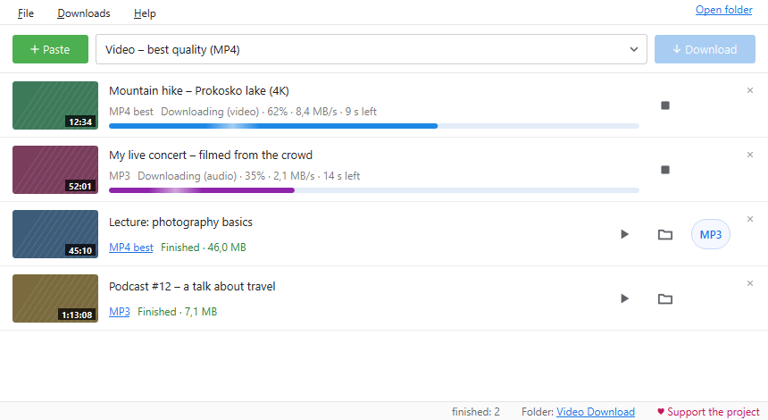

Video and audio.
In one click.
A free app for Windows and Mac: MP4 in full quality or MP3, straight from your browser or from a copied link.
The app is meant for your own videos, content you have the author's permission for, and content under a free license. By downloading you accept the Terms of use. DRM-protected content is not downloaded.
Try it: click + Paste.
Everything you need,
nothing you don't.
A simple window, with everything you expect from a good downloader underneath.
MP4 up to the best quality
Best, 1080p, 720p or 480p. Picture and sound are merged into an MP4 that plays everywhere.

Audio only: MP3 or M4A
For lectures, podcasts and music. A finished MP4 turns into an MP3 with one button.
Copy a link, done
The app notices a copied link and adds it to the queue.
Playlists, several at once
Whole playlists, up to 4 downloads at the same time, automatic retry when the connection drops.
Clips, subtitles, cover art
Just a part of a video, subtitles in the MP4 and the thumbnail as the file's cover.
Light and dark theme
Or same as your system. Progress on the taskbar and a notification at the end.
Always up to date, and safe
The app checks for new versions itself, updates the part that reads websites without reinstalling, and installs only updates digitally signed by us.
Download what's playing.
Play a video, click the icon, done. Or right-click any link or video. The app starts by itself if it isn't running.
- Firefox: one click, signed by Mozilla, updates itself
- Edge and Chrome: loaded once from the app folder
- Live streams and DRM-protected video are not downloaded
Your first file in under a minute.
Install once, then just copy links.
Install
No administrator needed, adds nothing else to your computer.
Add a link
Copy a link, click “Paste”, or use the extension.
Download
MP4 or MP3, then “Download”. The file waits in the Video Download folder.
First start, step by step.
The app isn't signed with a paid certificate yet, so your system asks once. Updates from inside the app don't.
Windows may show “Windows protected your PC”. Make sure the file comes from this site, then click More info and Run anyway.
Beta New: Video Download for Mac. For Macs with an Apple chip (M1 or newer) and macOS 13 or later. It works, but only a few people have tried it so far: please report anything that doesn't work.
The Mac version isn't signed by Apple yet, so the first start takes a few extra clicks:
- Open the downloaded .dmg and drag Video Download to Applications.
- Open the app. macOS says it can't verify it: click Done (not “Move to Trash”).
- Open System Settings → Privacy & Security, scroll down, click Open Anyway and enter your Mac password.
- Open the app again and confirm Open. This is needed only once.
Better every week.
The same list as in the app (Help → What's new).
0.9.6 26.9.2026
- Updates are digitally signed: the app installs only a new version signed by us, even if someone swaps the file where it is published.
- On first start, a short notice that the app watches copied links, with a button to turn it off right away.
- Leftover temporary cookie files (after a sudden shutdown) are removed on the next start; long lists use less memory.
- The connection with the browser add-on copes better with slow or stuck requests.
0.9.5 26.9.2026
- 1080p, 720p and 480p get a tag in the file name, so a different quality of the same video is no longer “already downloaded”.
- Two videos with the same title (file name without ID) no longer get mixed up; the same video started twice at once waits for the first one.
- “Finished” only when the file exists and can be read; MP3 conversion can always be stopped.
- Closing the app no longer freezes the window; updating also waits for MP3 conversions.
0.9.4 26.9.2026
- Stability: the same link can be added again right after “Stop”.
- Updating the site reader (yt-dlp) no longer deletes the version in use; if the new one doesn't work, the app goes back to the previous one.
- A damaged history or queue no longer crashes the app; if saving fails, the app tells you.
- Uninstalling also removes the Firefox connection; the speed limit is shared only among downloads that are actually running.
The app is free.
No ads, no tracking and no “premium” version. If it's useful to you, you can support its development voluntarily. A contribution unlocks nothing: the app is the same for everyone.
 Scan with your phone camera
Scan with your phone cameraQuestions?
If something doesn't work: in the app use Help → Save a problem report, then report the problem. Reports are public: don't include passwords or personal data.
A video suddenly won't download.
Websites change often. Help → Update the site reader (yt-dlp), then try again.
Why aren't live streams downloaded?
A live stream has no end, so the download would never finish. Download it after it ends and the recording is published.
What does the app send to the internet?
Only what's needed: the link you download goes to that website, and update checks go to GitHub and PyPI. No accounts, statistics or tracking.
Is it safe?
The code is public on GitHub, every installer has a SHA-256 checksum, and the app installs only updates digitally signed by us.